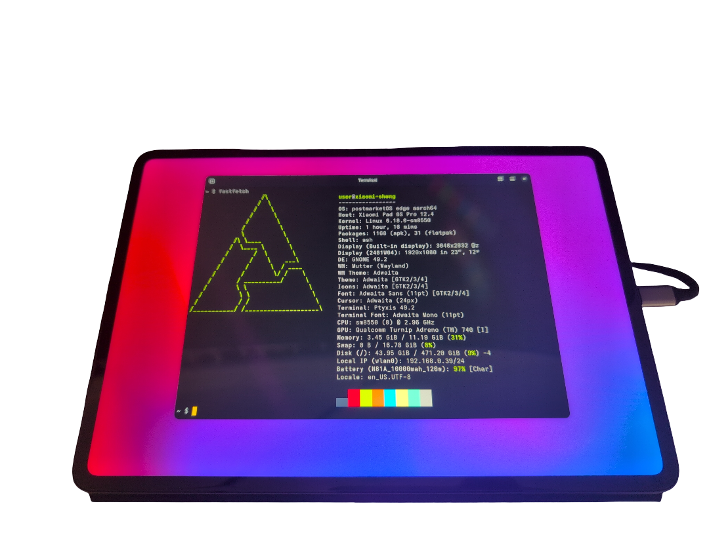

Xiaomi Pad 6S Pro 12.4 (xiaomi-sheng)
| This device has been tested with postmarketOS, but its device package has not yet been added to the postmarketOS repositories. This means that it cannot be selected in pmbootstrap. Status: unofficial |
|
 Xiaomi Pad 6S Pro 12.4 (xiaomi-sheng) running Gnome with unofficial mainline kernel (6.18-SM8550) | |
| Manufacturer | Xiaomi |
|---|---|
| Name | Pad 6S Pro 12.4 |
| Codename | xiaomi-sheng |
| Released | 2024 |
| Type | tablet |
| Hardware | |
| Chipset | Qualcomm Snapdragon 8 Gen 2 (SM8550) |
| CPU | Octa-core |
| GPU | Adreno 740 |
| Display | 3048 x 2032 (3:2, 120Hz, 12.4", IPS LCD) |
| Storage | 256/512 GB |
| Memory | 8/12 GB |
| Architecture | aarch64 |
| Software | |
Original software
The software and version the device was shipped with.
|
Android 14 HyperOS 1 |
Extended version
The most recent supported version from the manufacturer.
|
Android 14 |
| FOSS bootloader | no |
| postmarketOS | |
| Category | testing |
Mainline
Instead of a Linux kernel fork, it is possible to run (Close to) Mainline.
|
yes |
pmOS kernel
The kernel version that runs on the device's port.
|
6.18-SM8550 (unofficial) |
Unixbench score
Unixbench Whetstone/Dhrystone score. See Unixbench.
|
11423.0 |
{kind=link}
Flashing
Whether it is possible to flash the device with
pmbootstrap flasher. |
Works
|
|---|---|
USB Networking
After connecting the device with USB to your PC, you can connect to it via telnet (initramfs) or SSH (booted system).
|
Works
|
Battery
Whether charging and battery level reporting work.
|
Works
|
Screen
Whether the display works; ideally with sleep mode and brightness control.
|
Works
|
Touchscreen |
Works
|
Keyboard
Whether the built-in physical keyboard works.
|
Works
|
Touchpad
Whether the built-in touchpad works.
|
Works
|
Stylus |
Broken
|
| Multimedia | |
3D Acceleration |
Works
|
Audio
Audio playback, microphone, headset and buttons.
|
Works
|
Camera |
Works
|
Camera Flash |
Untested
|
| Connectivity | |
WiFi |
Works
|
Bluetooth |
Broken
|
NFC
Near Field Communication
|
Untested
|
| Miscellaneous | |
FDE
Full disk encryption and unlocking with unl0kr.
|
Broken
|
USB OTG
USB On-The-Go or USB-C Role switching.
|
Works
|
HDMI/DP
Video and audio output with HDMI or DisplayPort.
|
Works
|
| Sensors | |
Accelerometer
Handles automatic screen rotation in many interfaces.
|
Broken
|
Hall Effect
Measures magnetic fields; usually used as a flip cover sensor
|
Works
|
| There are global and CN versions of this xiaomi-sheng. This page is written with the global version in mind. As of now, CN devices are not unlockable and thus out of scope. |
Contributors
- alghiffaryfa19 / ozan — postmarketOS port for xiaomi-sheng
- map220v - kernel maintainer for xiaomi-sheng
Users owning this device
- 7rozen 7ear (Notes: Daily driver, desktop device.)
Alternative OSes
PostmarketOS by ozan
Debian by ozan
Ubuntu by ozan
Fedora (WIP)
Installing alternative OSes
The bootloader of xiaomi-sheng is unlockable. If the bootloader has been unlocked, then alternative Android ROMs or Linux OSes can be installed.
Bootloader unlocking
Because this device was released with HyperOS, you have to request your bootloader unlock rights through Xiaomi's Mi Community app. There are only a limited amount of requests granted per day. As of you now, you can only request unlock permissions for one device per year.
Place your request on 23:59 GMT+8 and your request should be granted after a few days of trying.
| WARNING: It is advised to not use external tools to request the bootloader unlock from Xiaomi. Xiaomi might ban your account, beware. |
See this guide by tom.android.
Enter fastboot and recovery modes
- Fastboot Mode: Power on the device by holding down and .
- Recovery Mode: Power on the device by holding down and .
Flashing
| WARNING: Multiboot can soft brick your device! Unbricking can be done through EDL mode, but that requires access to a Xiaomi service account. This is usually a paid service. It also seems that qbootctl, the utility used to change between slots on Linux, might brick your device. |
- See alghiffaryfa19's instructions and builds.
Hardware overview
Xiaomi Pad 6S Pro 12.4 Touchpad Keyboard
Works, but the assembly sometimes falls asleep. Removing and reconnecting the tablet briefly wakes the assembly up again.
The touchpad keyboard connects through the pogo pins at the back.
Xiaomi Focus Pen
Does not currently work.
Only Xiaomi's Focus Pen line is supported at the hardware level. Other styluses might work, but without palm rejection. A driver is required to make the stylus work.
Camera
The main rear camera and the front camera work, albeit with lower image quality than on Android.
Display output through USB C (HDMI/DP)
Works, but the monitor is not always detected. Try disconnecting the monitor from the power supply before connecting the cable.
Rebooting can also resolve the issue.
Component status table
Most components seem to be working as expected. If something works but not completely, it is described in the notes.
| Component | Model | Status | Notes |
|---|---|---|---|
| SoC | Qualcomm SM8550 Snapdragon 8 Gen 2 | Y | |
| Power button | ? | Y | |
| Volume down | ? | Y | |
| Volume up | ? | Y | |
| Display | ? | Y | Nightlight unavailable. |
| Touchscreen | Novatek (model TBD) | Y | |
| Backlight | ? | Y | |
| Stylus | ? | N | A driver is required to make the stylus work. The Novatek touchscreen driver might provide stylus data. |
| GPU | Adreno 740 | Y | |
| UFS Internal storage | ? (UFS 3.1) | Y | |
| Main camera | ? | Y | Reduced image quality when compared to Android. |
| Time-of-flight camera | ? | ? | |
| Camera flash | ? | ? | |
| Front camera | ? | Y | Reduced image quality when compared to Android. |
| Audio codec | ? | Y | |
| Speaker | ? | Y | Slight, noticable crackling. |
| Microphones | ? | Y | |
| WiFi | ? | Y | |
| Bluetooth | ? | N | Working in Debian and Ubuntu. |
| Fingerprint | ? | N | Requires writing a userspace library. |
| NFC | ? | ? | |
| Sixaxis | ? | N | Requires fixing hexagonrpcd for modern DOC's. If Xiaomi or Qualcomm did not change protobufs for generic sensors, libssc should just work. |
| Hall sensor | ? | Y | Requires fixing hexagonrpcd for modern DOC's. If Xiaomi or Qualcomm did not change protobufs for generic sensors, libssc should just work. |
| Magnetometer | ? | N | Requires fixing hexagonrpcd for modern DOC's. If Xiaomi or Qualcomm did not change protobufs for generic sensors, libssc should just work. |
| Light / Proximity | ? | ? | |
| Fuel gauge | ? | Y | Battery is reported to the OS. |
| Charger | ? | Y | Fast charging is unavailable, even on the included charger. |
| Keyboard | Xiaomi Pad 6S Pro 12.4 Touchpad Keyboard | Y | Working, but a reconnect is needed after the touchpad keyboard has entered sleep mode. |
| Touchpad | Xiaomi Pad 6S Pro 12.4 Touchpad Keyboard | Y | Working, but a reconnect is needed after the touchpad keyboard has entered sleep mode. |
Mainlining status
See merge request 7091!.